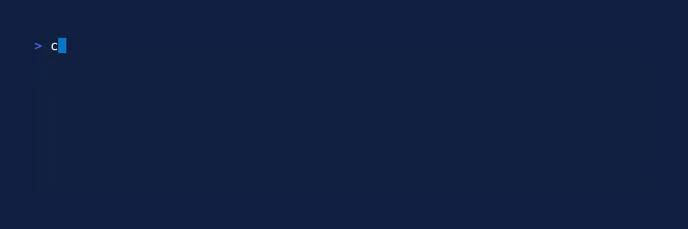

Ratatui is a crate for building terminal user interfaces in Rust.
One of the unique features of Ratatui is that it is an immediate mode rendering library. In this post, I’m going to describe some of the primitives of Ratatui. I rely on the concepts described in this post in every Ratatui application I build.
Immediate Mode Rendering
User interfaces can broadly be classified into two kinds:
immediate mode GUIs,
retained mode GUIs.
Casey Muratori has a great video on immediate mode rendering.
At a very high level, in retained mode GUIs, you create UI elements and pass it to a framework and the framework is in charge of displaying them. For example, you can create a text field and input field, and then the browser will render them. The browser is in charge of handling events, and as a developer you have to define how these events interact with these widgets.
For example, in a simple counter example in a browser, we have to set up an incrementCounter and decrementCounter callbacks that update the relevant element’s state. The browser is responsible for displaying these elements, receiving user inputs, calling the appropriate onclick callback, etc.
Code
fn show_html<D>(content: D) where D:std::fmt::Display{println!(r#"EVCXR_BEGIN_CONTENT text/html<div style="display: flex; justify-content:start; gap: 1em; margin: 1em">{}</div>EVCXR_END_CONTENT"#, content);}show_html(r#"<text> Counter: </text><text id="counter">0</text><button onclick="incrementCounter()">Increment</button><button onclick="decrementCounter()">Decrement</button><script> var counterElement = document.getElementById("counter"); var counterValue = 0; counterElement.textContent = counterValue; function incrementCounter() { counterValue++; counterElement.textContent = counterValue; } function decrementCounter() { counterValue--; counterElement.textContent = counterValue; }</script>"#)
Counter: 0
In immediate mode rendering, however, you are responsible for rendering the UI every frame. This is typically done in a for loop or a while true loop in your application. And you use an immediate mode rendering library to render the elements. This means you are responsible for a lot more things but it also gives you more control and freedom.
Buffer Primitives
One of Ratatui’s core primitives is a Rect struct. Let’s create one.
Let’s say you are rendering into an 80 wide, 5 tall terminal using Ratatui.
:dep ratatui:dep ratatui-macros
useratatui::layout::Rect;let (x, y, width, height) = (0,0,80,5);let area =Rect::new(x, y, width, height);area
Rect { x: 0, y: 0, width: 80, height: 5 }
In Ratatui, every widget renders into a Buffer of a fixed size that is equal to the terminal dimensions. Let create an empty buffer:
If we repeat this process of updating state and drawing UI in a loop, we get an immediate mode rendered UI.
Here’s what a more complete counter application might look like with keyboard events.

If you are interested in seeing the full code regarding this, you can check out the basic-app tutorial on the Ratatui website.
Ratatui uses a double buffer rendering technique that you can read about here.
Layout primitives
We already saw that Rect is one of the primitives for rendering a widget.
We can create a Rect using Rect::new(x, y, width, height):
let (x, y, width, height) = (0,0,50,5);let area =Rect::new(x, y, width, height);letmut buf =Buffer::empty(area);Block::bordered().render(area,&mut buf);buf
A Style object contains foreground color, background color, and modifiers for whether the style being applied is bold, italics, etc
There are a number of constructors for Span that you may use, but ratatui exposes a Stylize trait that makes it easy to style content which I find very useful.
useratatui::style::Stylize;// required trait to use style methods"hello world".bold()
Here, every element in the text! macro is converted to a Line.
Like Line, Text can also be aligned. In this case, the alignment occurs on every Line inside the Text.
let t =text!["hello world","goodbye world"].right_aligned();t.alignment
Some(Right)
Widget primitives
Block
The simplest widget is the Block widget, which is essentially just borders.
let (x, y, width, height) = (0,0,50,5);let area =Rect::new(x, y, width, height);letmut buf =Buffer::empty(area);Block::bordered().render(area,&mut buf);buf
Most widgets accept a Block as a fluent setter. We saw from earlier that the Paragraph has a .block() method that accepts a Block.
let paragraph =Paragraph::new(text).block(block).centered();
Blocks can have different kinds of borders:
let (x, y, width, height) = (0,0,50,5);let area =Rect::new(x, y, width, height);letmut buf =Buffer::empty(area);Block::bordered().border_type(ratatui::widgets::BorderType::Double).render(area.inner(&ratatui::layout::Margin::new(2,1)),&mut buf);Block::bordered().borders(ratatui::widgets::Borders::TOP |ratatui::widgets::Borders::BOTTOM).render(area,&mut buf);buf
And Block can have multiple titles in different locations:
let (x, y, width, height) = (0,0,50,5);let area =Rect::new(x, y, width, height);letmut buf =Buffer::empty(area);let block =Block::bordered().title("Top Left") // accepts anything that can be converted to a `Title` or a `Line`.title(Line::from("Top Center").centered()) // explicitly need to use `Line` if you want alignment.title(line!["Top Right"].right_aligned()) // you can use the `line!` macro to make it shorter.title(ratatui::widgets::block::Title::from("Bottom Right") // explicitly using `Title` gives you most control.alignment(ratatui::layout::Alignment::Right).position(ratatui::widgets::block::title::Position::Bottom) ).title_bottom(Line::from("Bottom Center").centered()) // shorthand functions for bottom position.title_bottom("Bottom Left");// aligned to the left by defaultblock.render(area,&mut buf);buf